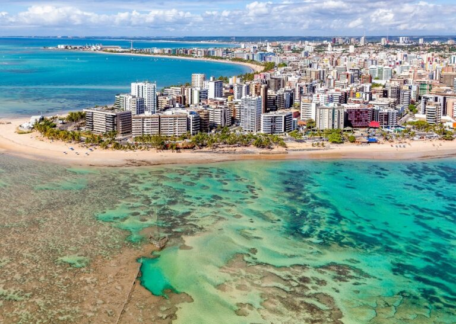
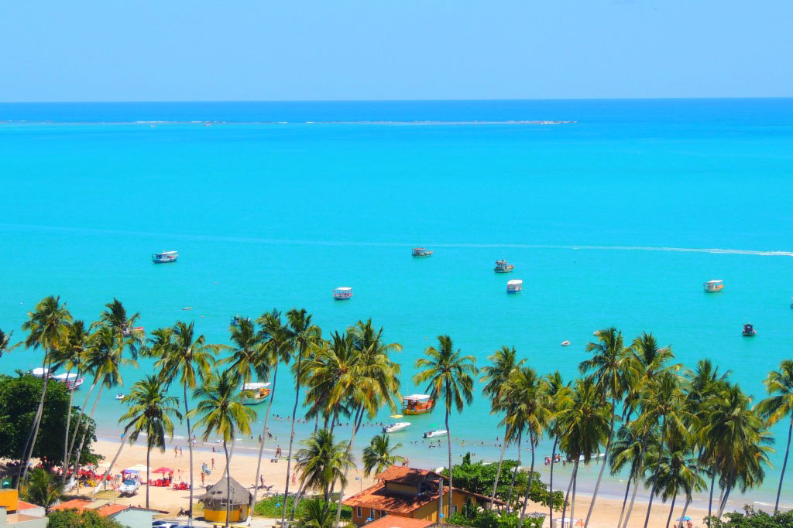

Maceió: A capital de Alagoas é um dos destinos mais procurados pelos turistas. Suas praias de águas cristalinas e areias douradas, como Ponta Verde, Pajuçara e Jatiúca, são ideais para banhos de mar e prática de esportes aquáticos. Além disso, Maceió conta com uma excelente infraestrutura turística, com hotéis, restaurantes e bares que oferecem o melhor da gastronomia local.
Cânion do Xingó: Localizado no município de Canindé de São Francisco, na divisa entre Alagoas e Sergipe, o Cânion do Xingó é uma das paisagens mais impressionantes do Nordeste brasileiro. Com suas águas verde-esmeralda e paredões rochosos, o cânion oferece um cenário deslumbrante para os visitantes. O passeio de catamarã pelo Rio São Francisco até o cânion é uma experiência única, onde é possível apreciar a beleza natural da região.

São Miguel dos Milagres: Conhecido como um dos destinos mais tranquilos de Alagoas, São Miguel dos Milagres é um verdadeiro refúgio de paz e natureza. Suas praias desertas e preservadas, como a Praia do Toque e a Praia do Riacho, são ideais para quem busca sossego e contato com a natureza. O passeio até as piscinas naturais de São Miguel dos Milagres é imperdível, onde os visitantes podem mergulhar em águas cristalinas e observar a vida marinha.

Maragogi: Conhecida como o "Caribe Brasileiro", Maragogi é famosa por suas piscinas naturais formadas pelos recifes de corais. As águas cristalinas e mornas são perfeitas para a prática de snorkeling e mergulho, onde os visitantes podem se encantar com a diversidade de peixes e corais. A Praia de Maragogi também é um convite para relaxar e apreciar a beleza natural do lugar.
Praia do Francês: Localizada no município de Marechal Deodoro, a Praia do Francês é um dos destinos mais badalados de Alagoas. Suas águas calmas e claras são ideais para banhos e esportes aquáticos, como o surf e o stand up paddle. A praia também conta com uma boa infraestrutura, com bares, restaurantes e quiosques que oferecem o melhor da culinária local.